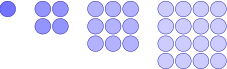

Sommaties
I Sommatienotatie
1 De notatie
Voor reële (of complexe) getallen \(a_0,a_1,\ldots ,a_n\) noteren we
\[ \sum _{i=0}^{n} a_i = a_0 + a_1 + \cdots + a_n . \]
-
• \(\sum \) : sommatieteken
-
• \(i\) : sommatie-index
-
• \(a_i\) : termen
2 Conventies
-
• De lege som is \(0\): \(\sum _{i=1}^{0} a_i = 0\).
-
• De index kan bij \(0\) of \(1\) starten; let op de context.
3 Waar ze vandaan komt
Het teken \(\sum \) is de Griekse hoofdletter sigma, de eerste letter van som. Leonhard Euler voerde de notatie in de achttiende eeuw in en maakte ze gangbaar. Ze is er dus gekomen om te schrijven wat je anders met puntjes moet aangeven, en dat scheelt zodra een som van \(n\) termen in een bewijs terechtkomt. In de negentiende eeuw groeide daaruit de theorie van de reeksen, bij Cauchy en Riemann, en werd de eindige som de bouwsteen van de integraal.
II Rekenen met sommen
1 Lineariteit
Voor alle rijen \((a_i)\) en \((b_i)\) en alle constanten \(k\) en \(l\) geldt
\[ \sum _{i=0}^{n} (k\,a_i + l\,b_i) = k \sum _{i=0}^{n} a_i + l \sum _{i=0}^{n} b_i . \]
Sommeren is dus lineair. Dat is de enige rekenregel die je hier moet onthouden; de vertrouwde regels lees je eruit af door \(k\) en \(l\) te kiezen:
\(\seteqnumber{0}{}{0}\)\begin{align*} \sum _{i=0}^{n} a_i + \sum _{i=0}^{n} b_i &= \sum _{i=0}^{n} (a_i+b_i) && (k=l=1) && \text {(groeperen som)} \\ \sum _{i=0}^{n} a_i - \sum _{i=0}^{n} b_i &= \sum _{i=0}^{n} (a_i-b_i) && (k=1,\; l=-1) && \text {(groeperen verschil)} \\ \sum _{i=0}^{n} (k\cdot a_i) &= k \cdot \sum _{i=0}^{n} a_i && (l=0) && \text {(scalair product)} \\ \sum _{i=0}^{n} k &= (n+1)\,k && (a_i=1,\; l=0) && \text {(som van constanten)} \end{align*} Bij die laatste staat er \(k \cdot \sum _{i=0}^{n} 1\), en die som telt \(n+1\) enen.
Dat optellen zich zo gedraagt, lijkt vanzelfsprekend, en juist daarom duurde het lang voor iemand er een eigenschap op zich in zag. Augustin-Louis Cauchy draaide de vraag in 1821 om in zijn Cours d’analyse: welke functies voldoen aan \(f(x+y)=f(x)+f(y)\)? Voor continue functies blijven er enkel \(f(x)=cx\) over, de rechten door de oorsprong. Dat optellen en een factor buitenbrengen samenhoren, werd pas in 1888 een afspraak, toen Giuseppe Peano ze als axioma’s voor een vectorruimte opschreef. De regel hierboven is precies wat hij daar vastlegde.
2 Bewijs van lineariteit
Stelling
\[ \sum _{i=0}^{n} (k\,a_i + l\,b_i) = k \sum _{i=0}^{n} a_i + l \sum _{i=0}^{n} b_i \]
Expansiebewijs
\begin{align*} \text {LL} &= \sum _{i=0}^{n} (k\,a_i + l\,b_i)\\ &= (k\,a_0 + l\,b_0) + \cdots + (k\,a_n + l\,b_n) \\ &= k\,(a_0+\cdots +a_n) + l\,(b_0+\cdots +b_n) \\ &= k \sum _{i=0}^{n} a_i + l \sum _{i=0}^{n} b_i\\ &= \text {RL}. \end{align*}
Inductiebewijs
- Basis:
-
(\(n=0\))
\[ \sum _{i=0}^{0} (k\,a_i + l\,b_i) = k\,a_0 + l\,b_0 = k \sum _{i=0}^{0} a_i + l \sum _{i=0}^{0} b_i . \]
- Inductiehypothese:
-
Neem aan dat de stelling geldt voor \(n-1\).
- Inductie Stap:
-
(\(n-1\to n\)):
\(\seteqnumber{0}{}{0}\)\begin{align*} \sum _{i=0}^{n} (k\,a_i + l\,b_i) &= \sum _{i=0}^{n-1} (k\,a_i + l\,b_i) + (k\,a_n + l\,b_n) \\ &= k \sum _{i=0}^{n-1} a_i + l \sum _{i=0}^{n-1} b_i + k\,a_n + l\,b_n \quad \text {(IH)}\\ &= k \sum _{i=0}^{n} a_i + l \sum _{i=0}^{n} b_i . \end{align*}
3 Werken met het bereik
Lineariteit gaat over de termen. De regels hieronder laten de termen met rust en veranderen enkel waar de index loopt.
Splitsen
Een som mag je bij elke \(m\) in twee stukken knippen:
\[ \sum _{i=0}^{n} a_i = \sum _{i=0}^{m} a_i \;+\; \sum _{i=m+1}^{n} a_i \qquad (m<n). \]
Herindexeren
Met \(j=i+c\) schuift het hele bereik \(c\) plaatsen op, terwijl de termen dezelfde blijven:
\[ \sum _{i=m}^{n} f(i) = \sum _{j=m+c}^{n+c} f(j-c). \]
Met \(c=1\) geeft dat de verschuiving die je het vaakst nodig hebt:
\[ \sum _{i=m}^{n} f(i) = \sum _{i=m+1}^{n+1} f(i-1). \]
Omkeren en herordenen
Voor eindige sommen mogen de termen vrij herschikt worden, dus mag je ze ook van achter naar voor doorlopen:
\[ \sum _{i=0}^{n} a_i = \sum _{i=0}^{n} a_{n-i}. \]
Voor dubbelsommen over eindige verzamelingen geldt
\[ \sum _{i\in I} \sum _{j\in J} b_{ij} = \sum _{j\in J} \sum _{i\in I} b_{ij}. \]
III Kernformules
Vier sommen kom je zo vaak tegen dat je ze uit het hoofd wil kennen. Elk van de vier staat hier met haar bewijs erbij.
1 Som van natuurlijke getallen
Kinderspel
Van Carl F. Gauss wordt verteld dat hij als schooljongen de opgave kreeg om alle getallen van \(1\) tot \(100\) op te tellen, en het antwoord \(5050\) in enkele tellen gaf. Hij telde niet van voor naar achter, maar legde de rij twee keer naast elkaar, de tweede keer omgekeerd. Dan staat er honderd keer \(101\). Of het precies zo gegaan is, weet niemand; het verhaal staat in de herdenkingsrede van zijn leerling Sartorius von Waltershausen uit 1856. Zijn titel staat wel vast: Gauss heet de prins der wiskundigen, naar de gedenkpenning die koning George V van Hannover in 1855 liet slaan met het opschrift Mathematicorum principi.
Formule
\[ \sum _{i=1}^{n} i = \frac {n(n+1)}{2} \]
Bewijs
\begin{align*} S &= 1+2+\cdots +n,\\ S &= n+(n-1)+\cdots +1,\\ 2S &= (n+1)+(n+1)+\cdots +(n+1) = n(n+1),\\ S &= \frac {n(n+1)}{2}. \end{align*}
Inductiebewijs
- Basis:
-
(\(n=1\))
\[ \sum _{i=1}^{1} i = 1 = \frac {1\cdot 2}{2} . \]
- Inductiehypothese:
-
Neem aan dat de stelling geldt voor \(n-1\).
- Inductie Stap:
-
(\(n-1\to n\)):
\(\seteqnumber{0}{}{0}\)\begin{align*} \sum _{i=1}^{n} i &= \sum _{i=1}^{n-1} i + n \\ &= \frac {(n-1)n}{2} + n \quad \text {(IH)}\\ &= \frac {(n-1)n + 2n}{2} \\ &= \frac {n(n+1)}{2} . \end{align*}
2 Som van kwadraten via dubbele som

Wie kanonskogels opstapelt tot een piramide met een vierkante basis, legt onderaan een laag van \(n\times n\) kogels, daarboven een van \((n-1)\times (n-1)\), en zo verder tot er bovenaan één kogel overblijft. Het aantal kogels in zo’n stapel is dus precies \(1^2+2^2+\cdots +n^2\). Die vraag is ook echt gesteld: rond 1591 rekende de Engelse wiskundige Thomas Harriot ze uit voor Walter Raleigh, die zoveel mogelijk kogels aan boord van zijn schepen wilde krijgen. Harriot wisselde daarover brieven met Johannes Kepler, die in 1611 vermoedde dat je bollen niet dichter kan stapelen dan in zo’n piramide. Dat vermoeden raakte pas in 1998 bewezen. Wij houden het hier bij het tellen van de kogels.
Stelling
\[ \sum _{i=1}^{n} i^2 = \frac {n(n+1)(2n+1)}{6} \]
Grafisch
Leg de lagen van de stapel naast elkaar: laag \(i\) is een \(i\times i\)-vierkant met \(i^2\) bollen.

Voorbeeld met \(n=4\)
\[\qquad \qquad \left . \begin {array}{c@{\quad }c@{\quad }c@{\quad }c@{\quad }c} \numdots {1} & \numdots {2} & \numdots {3} & \numdots {4} & \;\longrightarrow \; \sum _{i=1}^{4} i \\[1ex] & \numdots {2} & \numdots {3} & \numdots {4} & \;\longrightarrow \; \sum _{i=2}^{4} i \\[1ex] & & \numdots {3} & \numdots {4} & \;\longrightarrow \; \sum _{i=3}^{4} i \\[1ex] & & & \numdots {4} & \;\longrightarrow \; \sum _{i=4}^{4} i \end {array} \right \} \;\; \displaystyle \sum _{j=1}^4\sum _{i=j}^4 i \]
Bewijs
Vertrek van de visualisatie dat \(i^2\) het aantal punten in een \(i\times i\)-vierkant is en groepeer kolomsgewijs:
\(\seteqnumber{0}{}{0}\)\begin{align*} \sum _{i=1}^{n} i^2 &= \sum _{j=1}^{n} \sum _{i=j}^{n} i \\ &= \sum _{j=1}^{n}\Biggl (\sum _{i=1}^{n} i \;-\; \sum _{i=1}^{j-1} i\Biggr ) && \text {(indexeer vanaf 1)}\\ &= \sum _{j=1}^{n}\left (\frac {n(n+1)}{2} - \frac {(j-1)(j-1+1)}{2}\right ) && \text {(som natuurlijke getallen)}\\ &= \sum _{j=1}^{n}\frac {n(n+1)}{2} - \sum _{j=1}^{n}\frac {j(j-1)}{2}\\ &= n\cdot \frac {n(n+1)}{2} \;-\; \sum _{j=1}^{n}\frac {j(j-1)}{2} && \text {(niet afhankelijk van index)} \end{align*}
\(\seteqnumber{0}{}{0}\)\begin{align*} \Leftrightarrow \quad 2\sum _{i=1}^n i^2 &= n\cdot n(n+1) - \sum _{j=1}^n j(j-1)\\ \Leftrightarrow \quad 2\sum _{i=1}^n i^2 &= n^2(n+1) - \sum _{j=1}^n \bigl (j^2-j\bigr )\\ \Leftrightarrow \quad 2\sum _{i=1}^n i^2 &= n^2(n+1) - \sum _{j=1}^n j^2 + \sum _{j=1}^n j\\ \Leftrightarrow \quad 2\sum _{i=1}^n i^2 &= n^2(n+1) - \sum _{i=1}^n i^2 + \frac {n(n+1)}{2}\\ \Leftrightarrow \quad 3\sum _{i=1}^n i^2 &= n^2(n+1) + \frac {n(n+1)}{2} && \text {(sommatie naar LL)}\\ \Leftrightarrow \quad 6\sum _{i=1}^n i^2 &= 2n^2(n+1) + n(n+1)\\ \Leftrightarrow \quad 6\sum _{i=1}^n i^2 &= (2n^2+n)(n+1)\\ \Leftrightarrow \quad \;\; \sum _{i=1}^n i^2 &= \frac {n(n+1)(2n+1)}{6}\,. \end{align*}
Inductiebewijs
Het bewijs hierboven laat zien waar de formule vandaan komt. Wie ze al kent, kan ze ook gewoon natrekken met inductie.
- Basis:
-
(\(n=1\))
\[ \sum _{i=1}^{1} i^2 = 1 = \frac {1\cdot 2\cdot 3}{6} . \]
- Inductiehypothese:
-
Neem aan dat de stelling geldt voor \(n-1\).
- Inductie Stap:
-
(\(n-1\to n\)):
\(\seteqnumber{0}{}{0}\)\begin{align*} \sum _{i=1}^{n} i^2 &= \sum _{i=1}^{n-1} i^2 + n^2 \\ &= \frac {(n-1)n(2n-1)}{6} + n^2 \quad \text {(IH)}\\ &= \frac {(n-1)n(2n-1) + 6n^2}{6} \\ &= \frac {n\bigl (2n^2-3n+1+6n\bigr )}{6} \\ &= \frac {n\bigl (2n^2+3n+1\bigr )}{6} = \frac {n(n+1)(2n+1)}{6} . \end{align*}
3 Meetkundige som
Formule
\[ \sum _{i=1}^{n} x^i = \frac {x-x^{n+1}}{1-x} \qquad (x \neq 1) \]
Bewijs
Vermenigvuldig de som met \(x\) en trek af: op één term na valt alles weg.
\(\seteqnumber{0}{}{0}\)\begin{align*} S &= x + x^2 + \cdots + x^n,\\ xS &= x^2 + x^3 + \cdots + x^{n+1},\\ (1-x)S &= x - x^{n+1},\qquad S=\frac {x-x^{n+1}}{1-x}. \end{align*}
Inductiebewijs
Hetzelfde resultaat volgt ook met inductie. Het rekenwerk zit dan in de stap van \(n-1\) naar \(n\): je telt er één term bij en brengt alles weer op noemer \(1-x\).
- Basis:
-
(\(n=1\))
\[ \sum _{i=1}^{1} x^i = x = \frac {x(1-x)}{1-x} = \frac {x-x^{2}}{1-x} . \]
- Inductiehypothese:
-
Neem aan dat de stelling geldt voor \(n-1\).
- Inductie Stap:
-
(\(n-1\to n\)):
\(\seteqnumber{0}{}{0}\)\begin{align*} \sum _{i=1}^{n} x^i &= \sum _{i=1}^{n-1} x^i + x^n \\ &= \frac {x-x^{n}}{1-x} + x^n \quad \text {(IH)}\\ &= \frac {x-x^{n} + x^n(1-x)}{1-x} \\ &= \frac {x-x^{n+1}}{1-x} . \end{align*}
4 Telescopische som
\[ \sum _{i=1}^{n} \bigl (a_{i+1}-a_i\bigr ) = a_{n+1}-a_1 \]
Schrijf de som uit: elke term komt een tweede keer voor, met het andere teken.
\[ (a_2-a_1) + (a_3-a_2) + \cdots + (a_{n+1}-a_n) = a_{n+1}-a_1 . \]
Alles tussenin valt weg, zoals de buizen van een uitschuifbare telescoop in elkaar schuiven. Herken je in een som zo’n verschil van twee opeenvolgende termen, dan ben je er meteen.
5 Gevolgen
Met deze vier bereken je nu ook sommen die er op het eerste gezicht niet op lijken. De som van de oneven getallen, en de som van de producten van twee opeenvolgende getallen:
\(\seteqnumber{0}{}{0}\)\begin{align*} \sum _{i=1}^{n} (2i-1) &= 2\sum _{i=1}^{n} i - \sum _{i=1}^{n} 1 = n(n+1) - n = n^2,\\ \sum _{i=1}^{n} i(i+1) &= \sum _{i=1}^{n} (i^2+i) = \frac {n(n+1)(2n+1)}{6} + \frac {n(n+1)}{2} = \frac {n(n+1)(n+2)}{3}. \end{align*} In beide stappen doet lineariteit het werk: de som valt uiteen, en elk stuk is een kernformule.
IV Toepassingen
Informatica: complexiteitsanalyse
-
• Bubblesort-achtige lussen: \(\sum _{i=1}^{n-1} i = \Theta (n^2)\).
-
• Geneste lussen: \(\sum _{i=1}^{n} \sum _{j=1}^{i} 1=\sum _{i=1}^{n} i = \frac {n(n+1)}{2}\).
Natuurkunde
-
• Afgelegde weg bij discrete versnelling: \(s=\sum _{k=1}^{n} v_k\Delta t\).
-
• Benadering van een integraal via Riemann-sommen:
\[ \int _a^b f(x)\,dx \approx \sum _{i=1}^{n} f(x_i^\ast )\,\Delta x. \]
Economie/financiën
-
• Samengestelde interest: \(C_n=C_0\,(1+r)^n\) en contante waarde van \(n\) stortingen \(A\):
\[ \text {PV} = A\sum _{i=1}^{n}\frac {1}{(1+r)^i} = A\,\frac {1-(1+r)^{-n}}{r}. \]
Kansrekening
-
• Verwachtingswaarde als som: \(E[X]=\sum _{x} x\,P(X=x)\).
-
• Telescopisch voorbeeld: \(\displaystyle \sum _{k=1}^{n}\frac {1}{k(k+1)} =\sum _{k=1}^{n}\left (\frac {1}{k}-\frac {1}{k+1}\right )=1-\frac {1}{n+1}\).
V Oefeningen
Oefening 1
Bereken zonder rekenmachine:
-
(a) \(\displaystyle \sum _{i=1}^{50} (3i-2)\)
Lineariteit splitst de som in een scalair product en een som van constanten:
\(\seteqnumber{0}{}{0}\)\begin{align*} \sum _{i=1}^{50} (3i-2) &= 3 \sum _{i=1}^{50} i - \sum _{i=1}^{50} 2\\ &= 3 \cdot \frac {50 \cdot 51}{2} - 50 \cdot 2\\ &= 3825 - 100 = 3725. \end{align*}
-
(b) \(\displaystyle \sum _{k=0}^{n} (k+1)\)
Herindexeren met \(j=k+1\) maakt er de som van de eerste \(n+1\) natuurlijke getallen van:
\[ \sum _{k=0}^{n} (k+1) = \sum _{j=1}^{n+1} j = \frac {(n+1)(n+2)}{2}. \]
-
(c) \(\displaystyle \sum _{j=2}^{n+1} j^2 - \sum _{i=1}^{n} i^2\)
Beide sommen lopen over dezelfde kwadraten, alleen schuift het bereik één plaats op. We splitsen de eerste som af aan haar bovengrens en de tweede aan haar ondergrens:
\(\seteqnumber{0}{}{0}\)\begin{align*} \sum _{j=2}^{n+1} j^2 &= \sum _{j=2}^{n} j^2 + (n+1)^2,\\ \sum _{i=1}^{n} i^2 &= 1 + \sum _{i=2}^{n} i^2. \end{align*} Het gemeenschappelijke stuk valt weg:
\[ \sum _{j=2}^{n+1} j^2 - \sum _{i=1}^{n} i^2 = (n+1)^2 - 1 = n(n+2). \]
De formule voor de som van kwadraten heb je hier dus niet nodig.
Oefening 2
Gebruik telescoperen:
-
(a) \(\displaystyle \sum _{k=1}^{n} \frac {1}{k(k+1)}\)
Splits de breuk eerst in twee stukken:
\[ \frac {1}{k(k+1)} = \frac {(k+1)-k}{k(k+1)} = \frac {1}{k} - \frac {1}{k+1}. \]
Met \(a_k = \dfrac {1}{k}\) staat er \(-(a_{k+1}-a_k)\), dus telescopeert de som:
\(\seteqnumber{0}{}{0}\)\begin{align*} \sum _{k=1}^{n} \frac {1}{k(k+1)} &= -\sum _{k=1}^{n} (a_{k+1}-a_k) = -(a_{n+1}-a_1)\\ &= 1 - \frac {1}{n+1} = \frac {n}{n+1}. \end{align*}
-
(b) \(\displaystyle \sum _{k=1}^{n} \left (\sqrt {k+1}-\sqrt {k}\right )\)
Hier staat de telescopische vorm er al, met \(a_k = \sqrt {k}\):
\[ \sum _{k=1}^{n} \left (\sqrt {k+1}-\sqrt {k}\right ) = \sum _{k=1}^{n} (a_{k+1}-a_k) = a_{n+1}-a_1 = \sqrt {n+1}-1. \]
Oefening 3
Bewijs met inductie dat voor elke \(n \in \mathbb {N}_0\) geldt:
\[ \sum _{i=1}^{n} i^3 = \left (\frac {n(n+1)}{2}\right )^2 . \]
De som van de derde machten is dus het kwadraat van de som van de natuurlijke getallen.
- Basis:
-
(\(n=1\))
\[ \sum _{i=1}^{1} i^3 = 1 = \left (\frac {1 \cdot 2}{2}\right )^2 . \]
- Inductiehypothese:
-
Neem aan dat de stelling geldt voor \(n-1\).
- Inductie Stap:
-
(\(n-1\to n\)):
\(\seteqnumber{0}{}{0}\)\begin{align*} \sum _{i=1}^{n} i^3 &= \sum _{i=1}^{n-1} i^3 + n^3 \\ &= \left (\frac {(n-1)n}{2}\right )^2 + n^3 \quad \text {(IH)}\\ &= \frac {n^2(n-1)^2 + 4n^3}{4} \\ &= \frac {n^2\left ((n-1)^2 + 4n\right )}{4} \\ &= \frac {n^2(n+1)^2}{4} = \left (\frac {n(n+1)}{2}\right )^2 . \end{align*}
Oefening 4
Toon aan (met herindexeren) dat
\[ \sum _{i=0}^{n} (a_{i+1}-a_i)b_i = a_{n+1}b_n - a_0 b_0 - \sum _{i=0}^{n-1} a_{i+1}(b_{i+1}-b_i). \]
(Discrete “partiële integratie!”.)
We werken het linkerlid uit met lineariteit:
\[ \sum _{i=0}^{n} (a_{i+1}-a_i)b_i = \sum _{i=0}^{n} a_{i+1}b_i - \sum _{i=0}^{n} a_i b_i . \]
Van de eerste som splitsen we de laatste term af, van de tweede de eerste:
\(\seteqnumber{0}{}{0}\)\begin{align*} \sum _{i=0}^{n} a_{i+1}b_i &= \sum _{i=0}^{n-1} a_{i+1}b_i + a_{n+1}b_n,\\ \sum _{i=0}^{n} a_i b_i &= a_0 b_0 + \sum _{i=1}^{n} a_i b_i . \end{align*} Die laatste som herindexeren we met \(j=i-1\), zodat ze over hetzelfde bereik loopt als de eerste:
\[ \sum _{i=1}^{n} a_i b_i = \sum _{j=0}^{n-1} a_{j+1}b_{j+1}. \]
Nu lopen beide sommen van \(0\) tot \(n-1\) en groeperen we ze samen:
\(\seteqnumber{0}{}{0}\)\begin{align*} \sum _{i=0}^{n} (a_{i+1}-a_i)b_i &= a_{n+1}b_n - a_0 b_0 + \sum _{i=0}^{n-1} a_{i+1}b_i - \sum _{i=0}^{n-1} a_{i+1}b_{i+1}\\ &= a_{n+1}b_n - a_0 b_0 - \sum _{i=0}^{n-1} a_{i+1}(b_{i+1}-b_i). \end{align*} Neem je \(b_i=1\) voor elke \(i\), dan valt de restsom weg en houd je de telescopische som \(a_{n+1}-a_0\) over.
A Samenvatting